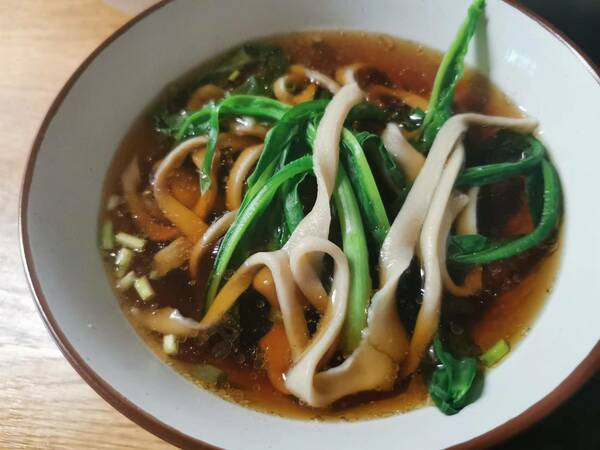
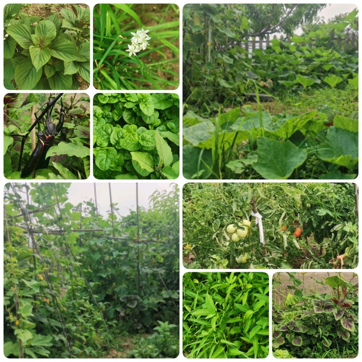
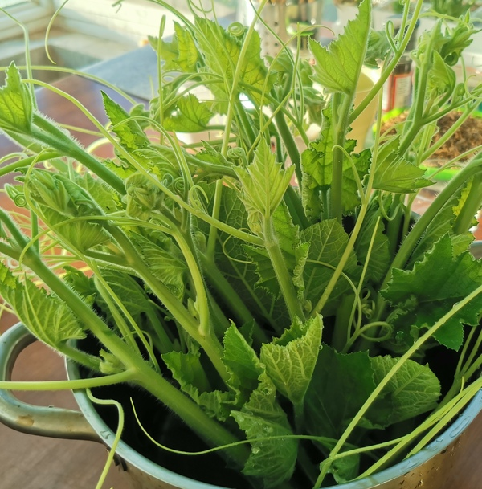
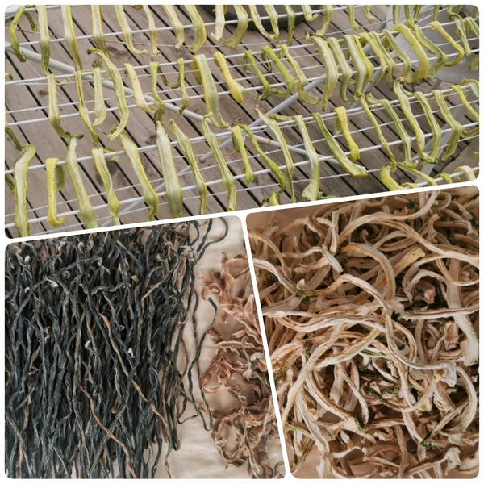
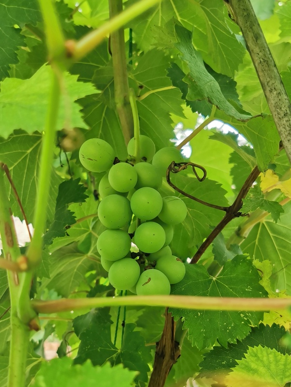
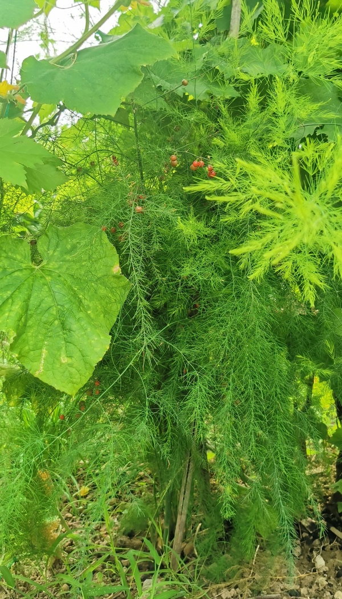
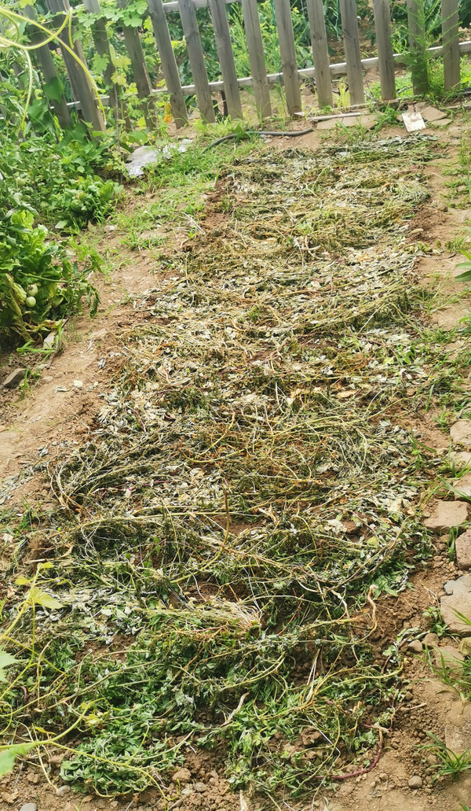

2# 做饭这件“小事”
这一次“赋闲”在家近两年了，没干别的，主要就是做饭，做饭之余再看看书，填补一下空旷的大脑。
通过看书发现，自己似乎还驻留在人类发展早期的“采集者”阶段：不仅对采集者的那段历史看得是津津有味、感同身受，并且还发现自身存留了不少采集者的特征，比如：
- 爱偷懒—— 采集者生活不易，为了维持能量摄取与消耗的平衡，在开源不易的情况下就需要有点节流的精神：能不动则不动，能不干活就不干活儿。
- 无计划性——靠天吃饭，跟着老天的节奏走就好。提前为某事做规划？日常琐事可享受不到这样的优待。
- 明显的群聚效应——“采集者”们需要彼此协作才能顺利生存：对那些关系到社群组织的、需要协同的、被冠名为“工作”的事会更加认真对待；而对自己的“私事”，难以产生推动力。
- 趋利避害，易受情绪支配——好吃的果子会吸引人去不停地摘：对于那些做了能让人感到愉悦的事，很乐意做，甚至反复去做；对于让自己不舒服的事，难以持续。
从实际的角度来说，解决一家老小的吃喝问题，应该属于头等要事，但因为以上特点，“为家人做饭” 这种私人的、繁复的、容易被人挑毛病的工作，很容易被扫进每日“不得不做”清单，着实让人积极不起来。
平时经常会等到接完小娃以后才开始做完饭。大娃放学一进门就开始四处觅食，面包酸奶有啥吃啥，还在做饭中的我就开始焦躁，并且后悔为啥不早点开始准备！痛定思痛，兴许第二天能好点，但是不用太久，又重新陷入这个循环。
后来有一天，心血来潮地烧了一壶茶，在给孩子们倒茶的一瞬间，唤醒了一点我的服务意识。
我们家的小厨房是L形的，L型内角是厨房的核心位置，邻着水池和餐桌，我站在内侧，孩子们坐在桌子对面，旁边一盏暖黄的小灯照下来，恍惚间我好像变成了一个茶馆老板娘，经营一间“妈妈小茶馆”，全年无休，朝六晚六，提供水饮三餐。
再一展望，不用多少年，孩儿们就要长大离家，小茶馆的生意可就没法像现在一样红火了。若等到那时再追忆往昔，还不如把握现在，认真做好每顿饭。这么一琢磨，也就心甘情愿起来了，谁叫他们是我最重要的客人呢？
翻书看视频学做饭，也挺有趣。
有一次刷到陈宗明师傅去粉丝家手把手教做菜，跟着视频一步步照做，竟大为受教。
这是做红烧肉第二天，3月8日的随笔（写给自己的信）：
昨天的一个特别的体会：厨房的一个规矩——无关的东西不要放在台面和砧板上，备料提前做好准备。起因是“师父和我做鲁菜”的陈宗明老师的一期红烧肉视频。这个体验可以纳入“改变人生的瞬间”系列，老师傅就是不一样！可以跟着学的太多太多了。
当时写得很潦草，现在回想起来，主要是被三个点触碰到：
一、时刻保持厨房处于可用状态，比如砧板要清空、刀要磨利。
二、姿势要正确，比如切菜时脚怎么站、刀怎么握、切菜时刀的角度，锅把怎么握等。
三、备料要提前做好准备，并且，还要细致，比如八角籽要敲碎让味道可以出来。
这些细节的改善，带来了源源不断的正反馈，体验到了一种“一切尽在掌握之中”的感觉！这种感觉太过良好，以绝对优势压倒了采集者“偷懒”和“无计划性”的原始本能。
说那是“改变人生的瞬间”，确实没有错，因为影响一直在持续：从那天起，眼里变得有活儿，而且也不嫌麻烦了，但凡有点闲暇，就顺手拾掇起来。后来，这个功能还自动延展到了其他领域。 这是做红烧肉两个月之后，5月15日的随笔：
通过做饭，随手收拾厨房的过程中，体会到了自己的一些变化，现在厨房竟然能够自动保持整洁了，真的一切都是全自动的，用过的餐具直接入洗碗机，台面上的东西看到会自动形成反射：它属于这里还是其他地方，如果属于其他地方，是否可归位。这就是习惯的力量吧！所以家里的凌乱应该有救了我想。
自从有了孩子，凌乱就是常态。尽管现在也不能算很有条理，但比起以前是强太多了，在与凌乱的交锋中，我好像已经占据主动了，嗯，未来可期！
“主动”这个词，最近不时地跳进我的生活：
- 卡片写作法（卢曼笔记法）中的一部分同费曼工作法，用输出倒逼输入和深加工，本质上是在尽力调遣主动性。
- 在《如何阅读一本书》里，作者提到他的目的是希望让读者认识到：“阅读可以是一件多少主动的事......阅读越主动，效果越好。”
- 大儿子现在遇到的学习瓶颈，从旁观者的角度看，关键点也落在主动性上。具体体现在动力来源的配比：是源自于个人内在还是父母师长。 一说这个老母亲就有点关不上话匣子了，感觉可以另开一个话题了：《唉！儿子就是我的镜子》，排到处暑的第五期？
跟着，又冒出一个问题，老师提供的这些细节提示，对我产生了挺大影响，如果让我儿子跟着做顿红烧肉，能不能达到同样的功用呢？
冷静想来，老师恰巧帮我解决了一些困扰已久的卡点。过去，因为这些卡点，产生了很多让人心情变差的负反馈，在没有明确具体卡点之前，整件事情都会因此而蒙上阴影，令人无力触碰。而这次发现：如果能精确定位到卡点，他原来只是一只纸老虎 ，比如
- 影响我做饭的心情其实是因为台面、砧板、水池的可用性差，切个姜都只能缩在砧板的角落上，只要及时清理，整个过程就顺畅了！
- 不愿洗碗是为什么？细细琢磨能发现：对我，最大的阻碍是洗完的碗不好放，如果滤干架没有清理出来，要考验堆叠的技术，会让人心烦意乱。在洗碗之前增加个清空滤干架的步骤，问题就解决了
儿子的功课和我的不一样，他拥有他自己的专属卡点。做顿红烧肉能管用？我怕是想多了。
那，一个普遍性的问题冒出来了：在天上不常掉馅饼的情况下，我们有没有可能主动去发现自己的卡点呢？
细细琢磨，正因为卡点会引发情绪，所以如果如果能敏锐一些，主动捕捉自己情绪的细微变化，就可能发现卡点的藏身之处，另一方面，我们本能地被情绪支配着，情绪直接影响行为，如果可以更进一步，识别并处理我们的情绪，我们还能在一定程度上跳脱出本能对我们的影响。想到这里，感觉鲁道夫·斯坦纳的六个基本练习似乎对此会有帮助：如果物种的进化是发生在种群的物质身体变化上，那人作为物种进化到一定阶段的产物，ta存在的意义是不是在于开启个体自身的某种进(净)化呢？
坚持打坐冥想是我一直没能实现的愿望，“赋闲”初始，我还特意安排自己去打坐，结果也没能坚持太久。现在发现，像做饭这种不起眼的“小事”，可能才是最质朴的践行良机。
以上都是胡言乱语，以下是这半年来收获的一些实际做饭心得😄
- 反复实践可以扩大能力圈：一些以前觉得是大事的事，都变得家常了。比如蒸馒头，浙江老家的食(xie)饼，扯面等，南方人对面食的恐惧，得到了部分消除。
- 想要坚持做饭，正反馈必不可少，对于会影响做饭情绪的负反馈要加以控制。如果你家里有一个观察细致，全方位挑刺的能人，还有挑嘴的孩子，那就需要采取一些主动手段： 最立竿见影的方法就是少做一点，不够吃的话，吃啥都香。 另外，还要注意扼杀不正之风，原则是：负责吃饭的人对做饭的人不必特意心存感激，但是有意见必须好好说，禁止抱怨，有想法就自己动手。
- 预备一些懒替的方案，比如，包饺子馄饨的时候顺手多包些冻起来，半成品的鸡米花鸡排搭配烤箱或者空气炸锅，冰冻的杂蔬粒，香肠，榨菜等等。。不行还有外卖不是？总之顺着自己的感受，不想动就歇着，人能量不足的时候也需要自我修复呀。
- 优化步骤。比如做酸奶，泡菜时，我对容器的预处理已经从蒸、开水烫简化到洗净即可，其实这类发酵食物只要确保正确的菌种保持优势地位就没有问题，不必过于小心。
- 借助厨房小电器，小电器的优势是不用看管。面包机，电饭锅、饼铛烤箱空气炸锅等这些都是好帮手。嗯，感觉这里有话想说，我们第六期锁定《厨房小帮手》吧。
- 提前预备！不仅能节约时间，还能节约工作量，比如揉面；还有，有些东西不提前准备，就永远也吃不上，比如木耳、海带、酒酿、酸奶、扯面、馒头等等
- 不要买那些觉得很好很健康，但实际压根不会做或者不受家人欢迎的食材，总之别把难题交给未来的自己。比如，山药在我家就是买了扔，扔了买的典型食材；家里现在暂未过期的压仓货还有黑麦面粉、全麦面粉、鹰嘴豆、亚麻籽等等，我多希望没有买过他们。
- 对做饭水准不要苛求，能达到60%及格就好，多给未来留点进步空间呗
做饭笔记
❓ 在忙乱的工作日早上，怎样能煮出这样一碗手工面？

💬 主要依靠如下几条心得：3优化步骤、4借助小电器、5提前准备、7不苛求。
必须前一天准备的（小食量四人份）
- 揉面：150g水，280g面粉，面包机的饺子皮程序15分钟（手揉也不麻烦，先把面揉成团，静置15分钟后，再揉到表面光滑就可以了，有时间可以多重复几次）。程序结束后，把面取出来，在案板揉光滑，在容器倒点香油，把面团外面都抹上油，盖好，放到冰箱。
可以前一天准备，也可以当天准备的
- 菜洗净：各种叶菜、丝瓜条等觉得愿意跟面搭配的蔬菜均可。
- 配料汁：酱油3勺（15ml大勺），醋1勺，香油1勺，花椒油0.5勺，其他按需随意：盐、味精、胡椒粉、糖、猪油、葱花、姜蒜泥等。
当天开饭前10分钟
- 从冰箱里取出面团、蔬菜、料汁、鸡蛋。
- 鸡蛋放电饭锅里，加一点点水，用蒸煮程序5分钟。
- 面团从冰箱里取出来，切割需要的部分，比如一个人吃就切1/4，用手压扁，切成若干同手指宽度的条。最后再在每个窄条中间压一道缝。
- 等锅里的水烧开后下面条（丝瓜条要煮久一点，这时候下），重复以下步骤直到下完为止：拿起一个窄条，扯长，再从中缝撕开变成一个圈圈，扔水里。
- 料汁用凉开水或者锅里的汤稀释一下，平均分到碗里。
- 锅里水开以后，叶菜扔水里烫一下，连汤带面地打捞入碗。
- 去电饭锅里捞鸡蛋，剥壳，对半切开扔碗里，吃的时候按个人喜好浇上辣椒油即可。
上面的步骤其实越做越简单，对我来说：揉面是最困难，扯面是最好玩的，最后一步是最有成就感的。
妈妈的小菜园
今年小暑到大暑这段时间，雨水没有这么频繁了，晴天变多了，南瓜、豆角、紫苏、苋菜还有杂草，都焕发出昂扬生机，菜园给挤得满满当当。
搭豆角架子的老竹竿感觉快要撑将不住了，不知道还能不能扛过下一场暴风雨。韭菜开花了，茄子西红柿也结果了，不过，绿色还是主调。↓

南瓜的阵势最大，疯狂扩张领地，妈妈说顺着藤找了一遍，竟然就只发现一个瓜。不过呢，南瓜尖儿那么好吃，结果不结果的都没关系，摸着毛呼呼的南瓜叶子我就开始咽口水，“采集者”本性又暴露了。。。↓ 
这段时间收获最多的是四季豆、豇豆和黄瓜，妈妈的晾晒事业也在如火如荼的开展着：天气好晾在外面，天气不好就拿回家里，有时候坐在家里感觉热的慌，抬头一看才发现，风扇正努力又专注地吹着黄瓜干们，实在是顾不上我们这些人类了哎。。。↓ 
菜园里我的重点关注对象之一：葡萄。去年种下的三棵宿迁葡萄还都活了，在架子上攀爬得很热闹，不过呢，总共就结了两串葡萄。
某日，因我夫君修剪过于勤奋，一剪子下去就减产了50%！所以，最后仅存的这一串硕果获得了大家100%的关注：今年葡萄总产量预计20粒，人均4粒。
现在看着这串葡萄大起来了，我又产生诸多疑问：它会不会是那种绿葡萄？需要等到它变紫的时候吗？会不会误了吃他的时间？不知道立秋的时候有没有答案。↓

菜园里我的重点关注对象之二：这是在菜市场能买到的一种菜，但如果之前没有见过植株本尊，可能都没法将二者关联到一起。他的果实很漂亮，很早就开始结果，现在竟然慢慢变红了。能猜到是什么吗？↓ 
芦笋，猜对了吗？ 这也是去年从种子种起的，今年粗粗细细收获有十根不止了。

↑妈妈在拥挤的菜园里开辟了一片空地，准备种大白菜、大白萝卜和胡萝卜，下次也许能出苗了吧，立秋再来做汇报。
好了，这就是杏子扑簌簌的第2期(壬寅·大暑)的期刊信，感谢阅读！
如果觉得有趣，欢迎点击竹白-杏子扑簌簌订阅更新💓
下期话题 《说说我在用的搭网站和做笔记的工具》将于8/7立秋时节发布，我们下期见！